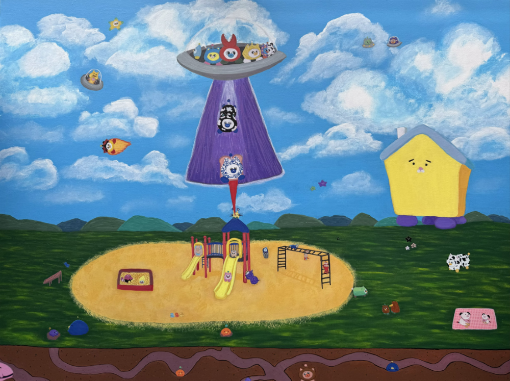

Peepy Mystery Solved!!!

The mystery of the missing Peepies and Ouiouis have been solved!
Yesterday night, a UFO descended into the atmosphere and began slowly lowering Peepies and Ouiouis en masse back to Earth. Many of them ran straight towards their family and friends, which had gathered in crowds around the spectacle. “That was SICK!” one Green Cube Peepy shouted as he reached the soil. “I’ll NEVER get tired of Robocop!” Police, detectives, and news reporters rushed to the scene in order to piece together what happened. Everybody’s story remained consistent: they were kidnapped by the UFO against their wills, thrown into Space Jail on the spaceship, and then inexplicably deposited back to Earth a week later.
While the reason for their sudden return is unknown, as of our current count, every missing Peepy and Ouioui has been accounted for upon their return. The sight was beautiful: baby Ouiouis crying into the soft pouch of their Papupi, Peepies gratefully embracing the friends they thought they’d never see again. I don’t think I’ve seen anything so touching.
After dropping their hostages off, the UFO flew away promptly, blocking us from getting further answers about the disappearance. The Peepies and Ouiouis seem just as confused as we are. “I thought we were done for,” one Eyesight Ouioui timidly explained. “But then some guy named Youfo started complaining about his debt, and I went to sleep, and when I woke up we were back on Earth. Papupi? What does debt mean?”
Despite the lack of answers, we are all extremely happy to have everybody back safe and sound on Earth. We wanted to express a special thanks to everybody who helped us in this search, including but not limited to Dinkle, Mr. Baby, Howdy Moley, Fishcar, Homie, Sticky, and Aplesto. And another special thanks to you beautiful, attractive, muscular viewers. We couldn’t have done it without your support.